Kebudayaan Indonesia
Budaya Indonesia adalah seluruh kebudayaan nasional, kebudayaan lokal, maupun kebudayaan asal asing yang telah ada di Indonesia sebelum Indonesia merdeka pada tahun 1945.Kebudayaan nasional yang berlandaskan Pancasila adalah perwujudan cipta, karya dan karsa bangsa Indonesia dan merupakan keseluruhan daya upaya manusia Indonesia untuk mengembangkan harkat dan martabat sebagai bangsa, serta diarahkan untuk memberikan wawasan dan makna pada pembangunan nasional dalam segenap bidang kehidupan bangsa. Dengan demikian Pembangunan Nasional merupakan pembangunan yang berbudaya.Departemen Pendidikan dan Kebudayaan, Wujud, Arti dan Puncak-Puncak Kebudayaan Lama dan Asli bagi Masyarakat Pendukungnya, Semarang: P&K, 199 ” Kebudayaan nasional dalam pandangan Ki Hajar Dewantara adalah “puncak-puncak dari kebudayaan daerah”. Kutipan pernyataan ini merujuk pada paham kesatuan makin dimantapkan, sehingga ketunggalikaan makin lebih dirasakan daripada kebhinekaan. Wujudnya berupa negara kesatuan, ekonomi nasional, hukum nasional, serta bahasa nasional. Definisi yang diberikan oleh Koentjaraningrat dapat dilihat dari peryataannya: “yang khas dan bermutu dari suku bangsa mana pun asalnya, asal bisa mengidentifikasikan diri dan menimbulkan rasa bangga, itulah kebudayaan nasional”. Pernyataan ini merujuk pada puncak-puncak kebudayaan daerah dan kebudayaan suku bangsa yang bisa menimbulkan rasa bangga bagi orang Indonesia jika ditampilkan untuk mewakili identitas bersama. Nunus Supriadi, “Kebudayaan Daerah dan Kebudayaan Nasional” Pernyataan yang tertera pada GBHN tersebut merupakan penjabaran dari UUD 1945 Pasal 32. Dewasa ini tokoh-tokoh kebudayaan Indonesia sedang mempersoalkan eksistensi kebudayaan daerah dan kebudayaan nasional terkait dihapuskannya tiga kalimat penjelasan pada pasal 32 dan munculnya ayat yang baru. Mereka mempersoalkan adanya kemungkinan perpecahan oleh kebudayaan daerah jika batasan mengenai kebudayaan nasional tidak dijelaskan secara gamblang. Sebelum di amendemen, UUD 1945 menggunakan dua istilah untuk mengidentifikasi kebudayaan daerah dan kebudayaan nasional. Kebudayaan bangsa, ialah kebudayaan-kebudayaan lama dan asli yang terdapat sebagi puncak-puncak di daerah-daerah di seluruh Indonesia, sedangkan kebudayaan nasional sendiri dipahami sebagai kebudayaan bangsa yang sudah berada pada posisi yang memiliki makna bagi seluruh bangsa Indonesia. Dalam kebudayaan nasional terdapat unsur pemersatu dari Banga Indonesia yang sudah sadar dan mengalami persebaran secara nasional. Di dalamnya terdapat unsur kebudayaan bangsa dan unsur kebudayaan asing, serta unsur kreasi baru atau hasil invensi nasional.[1]
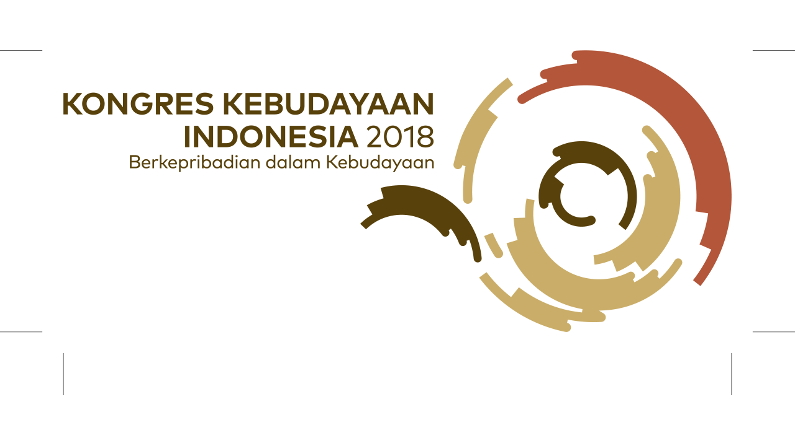Macam Macam Kebudayaan di Indonesia dan Penjelasannya
Macam macam kebudayaan Indonesia sangat beragam dan hadir dalam banyak bentuk seperti karakteristik kemajemukan yang dimiliki oleh bangsa ini. Menurut Mitchel budaya adalah seperangkat nilai-nilai inti, kepercayaan, standar, pengetahuan, moral hukum dan perilaku yang disampaikan oleh individu-individu dan masyarakat yang menentukan bagaimana seoseroang bertindak, berperasaan dan memandang dirinya serta orang lain.ads Kebudayaan Indonesia memiliki karakteristik kebudayaan sendiri yang dipengaruhi oleh berbagai macam faktor, terutama faktor geografis, agama, politik, ekonomi dan sebagainya. Seperti sudah dijelaskan sebelumnya bahwa karakteristik kebudayaan itu :
- Culture is an adaptive mechanism
- Culture is learned
- Cultures Changed
- People are usually not aware of their culture
- We don’t know all of our own country
- Culture give us a range of permissible behaviors patterns
- Cultures no longer exist in isolation
- Culture is shared
Kebudayaan Indonesia selalu bersinggungan dengan 8 karakteristik tersebut. Hal tersebut merupakan hasil dari keberagaman atau kemajemukan dalam masyarakat. Nah, pada artikel kali ini kita akan membahas macam macam kebudayaan Indonesia. Yuk! Simak artikel di bawah ini.
Macam Macam Kebudayaan Di Indonesia
Menurut TAP MPR No.11 tahun 1998 kebudayaan Nasional adalah perwujudan cipta, karya dan karsa bangsa Indonesia dan merupakan keseluruhan daya upaya manusia Indonesia untuk mengembangkan harkar dan martabat bangsa, serta diarahkan untuk memberikan wawasan dan makna pada pembangunan nasional dalam segenap kehidupan bangsa. Dengan demikian pembangunan nasional merupakan pembangunan yang berbudaya. Kebudayaan Indonesia tersebar di banyak daerah. Tersebar di 33 Provinsi yang ada di Indonesia dengan berbagai ciri khas dan karakteristik. Bentuknya pun dapat bermacam-macam. Karena sejatinya kebudayaan adalah nilai-nilai kedaerahan yang dikemas dalam berbagai bentuk. Macam macam kebudayaan tersbeut diantaranya :
1.Rumah Adat
Rasanya kita pasti sering mendengar tentang rumah adat. Tapi tahukah kamu apa pengertian dari rumah adat itu sendiri? Rumah adat adalah salah satu bentuk kebudayaan Indonesia yang lahir dari seni bangunan atau arsitektur dan biasanya memiliki cirikhas khusus tergantung pada daerah asalnya. Bentuk kebudayaan satu ini digunakan untuk tempat hunian oleh suatu suku bangsa tertantu. Dan tahukah kamu bahwa rumah adat yang ada di setiap daerah merupakan representasi daripada kebudayaan yang paling tinggi dalam sebuah komunitas suku ataupun masyarakat. Pada artikel sebelumnya kita juga telah membahasa mengenai rumah adat yang termasuk ke dalam contoh seni bangunan Indonesia.
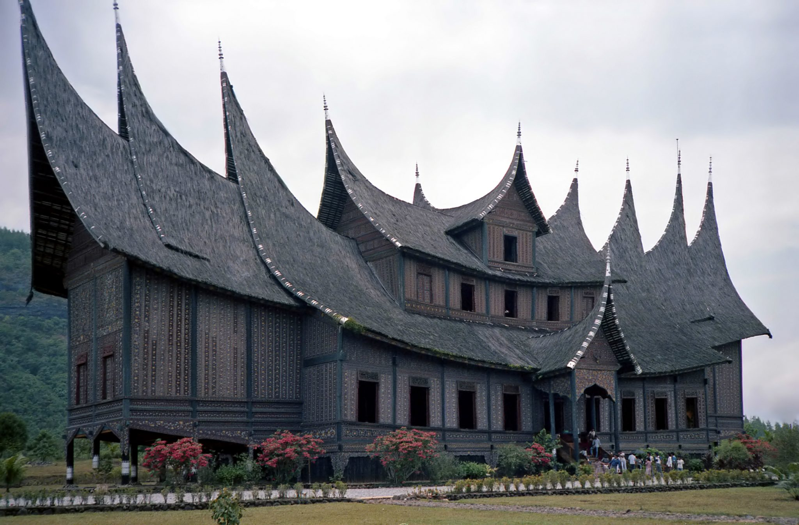2.Pakaian Adat
Jangan salah, Pakaian adat atau pakaian tradisional juga merupakan salah satu dari banyaknya kebudayaan yang ada di Indonesia. Selain karena ciri khas dari setiap daerah, pakaian adat juga dapat merepresentasikan karakter ataupun prinsip dari suku atau masyarakat daerah tertentu. Indonesia memiliki banyak sekali pakaian adat yang ada di setiap daerahnya, bahkan ada beberapa daerah yang memiliki lebih dari satu jenis pakaian adat. Selain itu pakaian adat Indonesia juga kerap menuai pujian dari negara-negara lain. Jika negara lain saja terpukau dengan kebudayaan Indonesia, kenapa kita harus malu mengenakan pakaian adat kita sendiri? Dan jika kalian telaah dan perhatikan, pakaian adat adalah salah satu hasil karya cabang seni rupa terapan. 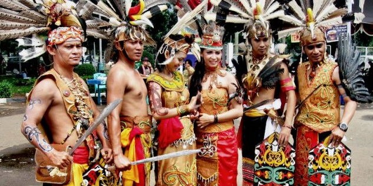3.Upacara Adat
Salah satu cara untuk mengenang dan mengenal sejarah suatu suku atau masyarakat adalah melalui upacara. Arti dari kata upcara adalah serangkaian tindakan atau perbuatan yang terikat pada aturan tertentu berdasarkan adat istiadat, agama dan kepercayaan. Istilah upacara adat sendiri memiliki arti yakni salah satu cara menelusuri jejak sejarah masyarakat Indonesia pada masa praaksara. Upacara adat yang dimaksud disini diantaranya upacara penguburan, upacara perkawinan, upacara labuhan, upacara camas pusaka dan masih banyak lagi. 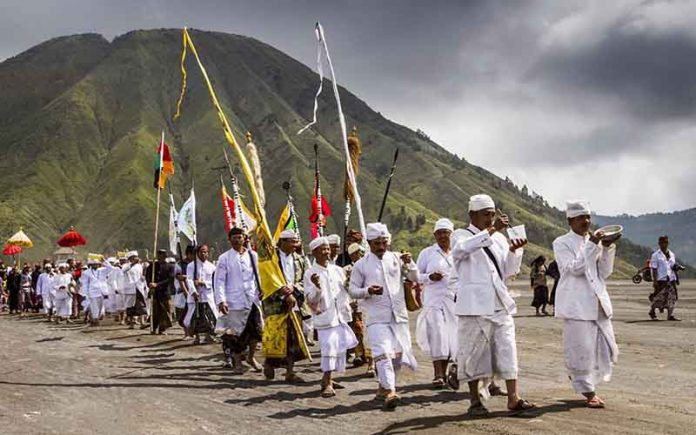4.Seni Musik
Musik nusantara merupakan cabang seni khususnya seni musik yang lahir dan berkembang di seluruh wilayah kepualaun Indonesia dan juga merupakan kebiasaan turun menurun yang masih dijalankan dalam masyarakat. Seperti halnya kebudayaan lainnya, seni musik juga tersebar di seluruh daerah dan memiliki cirikhas masing-masing. Cabang seni musik nusantara ini juga dapat digolongkan ke dalam beberapa jenis seperti : Musik daerah (karawitan, keroncong, dll), musik perjuangan (Lagu-lagu nasional seperti halo-halo bandung, dll), musik anak-anak (Pok Ame-ame, Kasih Ibu, Balonku ada lima,dll), musik populer ( Dangdut, dll)..jpg)
5.Seni Tari Tradisional
Tidak kalah dengan kebudayaan lainnya, seni tari juga memiliki berbagai macam jenis yang tersebar di seluruh wilayah kepulauan Indonesia. Secara umum pengertian seni tari adalah suatu gerak ritmis yang dapat menghadirkan karakter manusia saat mereka bertindak. Jenis-jenis seni tari sangatlah banyak, salah satunya adalah seni tari tradisional. Seni tari tradisional adalah seni tari yang lahir dan berkembang di seluruh wilayah kepulauan Indonesia. Ia lahir sebagai buah pemikiran dan pengaplikasian nilai-nilai kepercayaan masyarakat setempat. 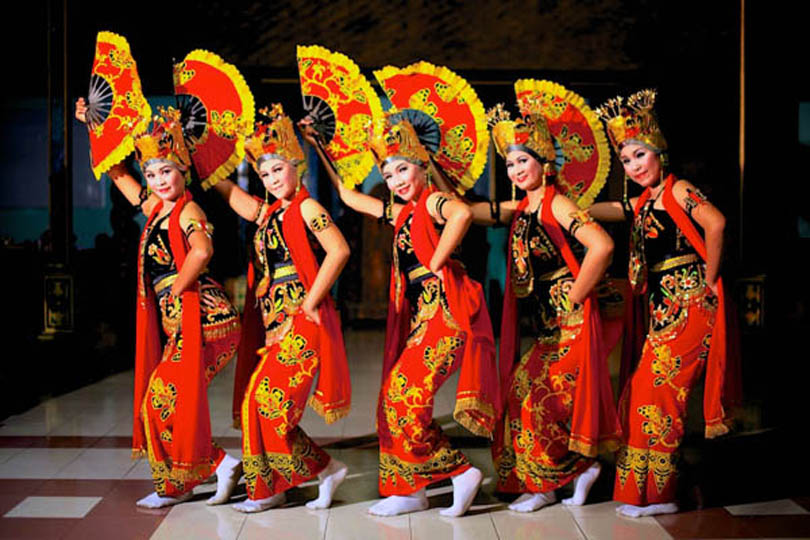6.Seni Rupa Tradisional
Mungkin diantara kalian sudah banyak yang faham dan hatam tentang seni rupa. Ya, banyak sekali hasil karya sein rupa yang lahir dan berkembang di Indonesia, baik terapan ataupun karya seni rupa murni. Diantaranya ada seni bangunan, batik, cobek, dll. 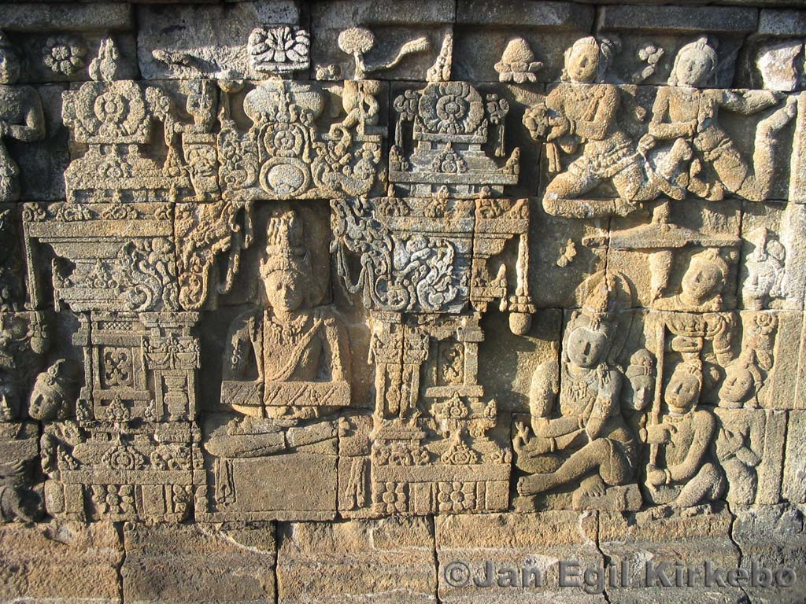7.Senjata Tradisional
Produk budaya yang satu ini erat hubungannya dengan suatu masyarakat tertentu. Selain lahir sebagai bentuk melindungi dari serangan musuh, senjata tradisional juga lahir untuk menopang kegiatan berladang dan berburu yang menjadi mata pencaharian masyarakat jaman dulu. Dewasa ini, senjata tradisional menjadi identitas suatu bangsa yang mengambil peran dan turut serta memperkaya kebudayaan indonesia. 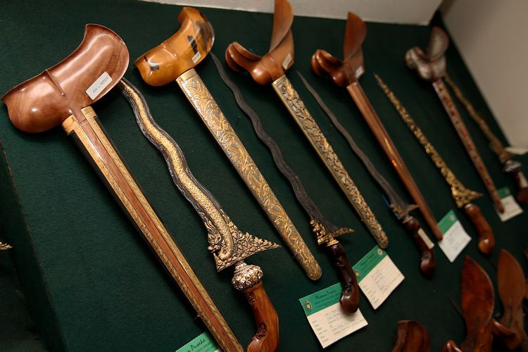8.Suku Bangsa
Kita semua pasti tidak asing dengan kata satu ini. Ya, Suku. Kata yang selalu dikaitkan dan menjadi dasar atau komponen yang tidak dapat dilepaskan dari kebudayaan, khususnya kebudayaan Indonesia. Secara istilah, suku adalah sebuah realitas /kenyataan dari kelompok masyarakat tertentu di daerah yang ditandai oleh adanya kebiasaan-kebiasaan dan praktek hidup yang ada pada kelompok masyarakat itu sendiri. Kebudayaan Indonesia benar-benar tidak dapat dipisahkan dari suku itu sendiri. contohnya seperti kebudayaan suku jawa, kebudayaan suku dayak, kebudayaan suku batak, kebudayaan suku minangkabau, kebudayaan suku bugis, kebudayaan suku banjar, Kebudayaan suku Amungme, Kebudayaan Suku Alor, Kebudayaan Suku Akit, dll. 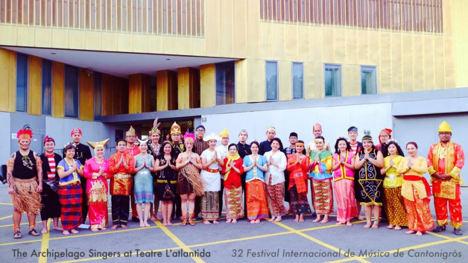9.Bahasa Daerah
Ya, jangan kalian sangka bahwa Bahasa Daerah bukan merupakan sebuah kebudayaan. Menurut wikipedia bahasa daerah adalah suatu bahasa yang dituturkan di suatu wilayah dalam sebuah negara kebangsaan pada suatu daerah kecil, negara bagian ataupun provinsi. Fungsi dari bahasa daerah adalah sebagai identitas suatu kelompok masyarakat. Jumlah bahasa daerah di Indonesia sendiri adalah sebanyak 652 bahasa. Itulah macam macam kebudayaan Indonesia yang sudah sepatutnya kita jaga dan kita lestarikan. Dari penjelasan di atas kita dapat memehami bahwa Bangsa Indonesia adalah bangsa yang kaya akan kebudayaan. Semua kebudayaan itu digolongkan ke dalam berbagai macam bentuk, seperti Rumah adat, pakaian adat, upacara adat, seni tari, seni musik, bahasa daerah, lagu daerah, dll. 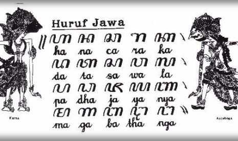Wonderfull indonesia
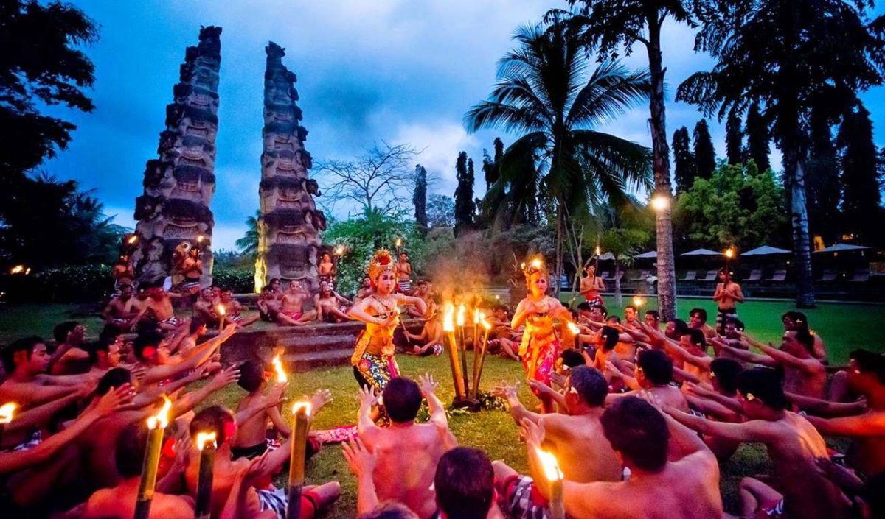Tari Kecak -bali-
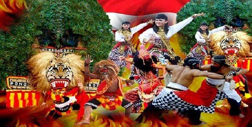Reog -Ponorogo-

Lompat batu -Nias Sumatra utara
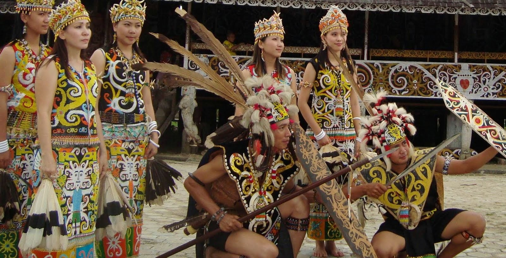Tarian suku dayak -borneo-

Angklung -jawa-
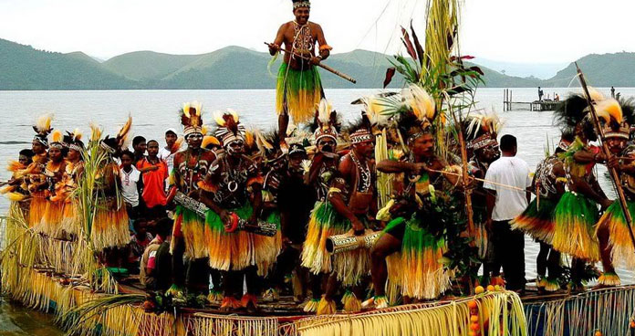Tarian perang -festival sentani-
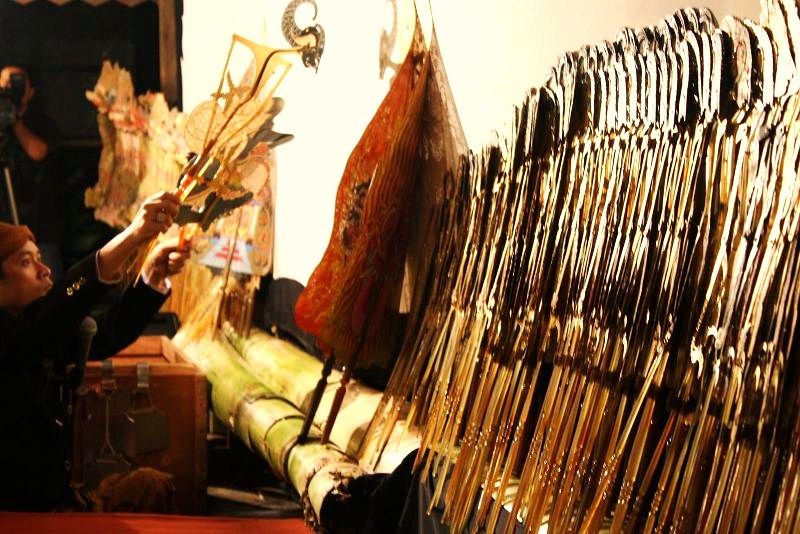Wayang kulit -jawa
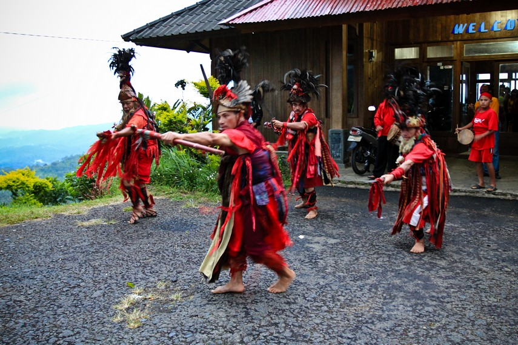Tarian kebesaran -kalimantan-
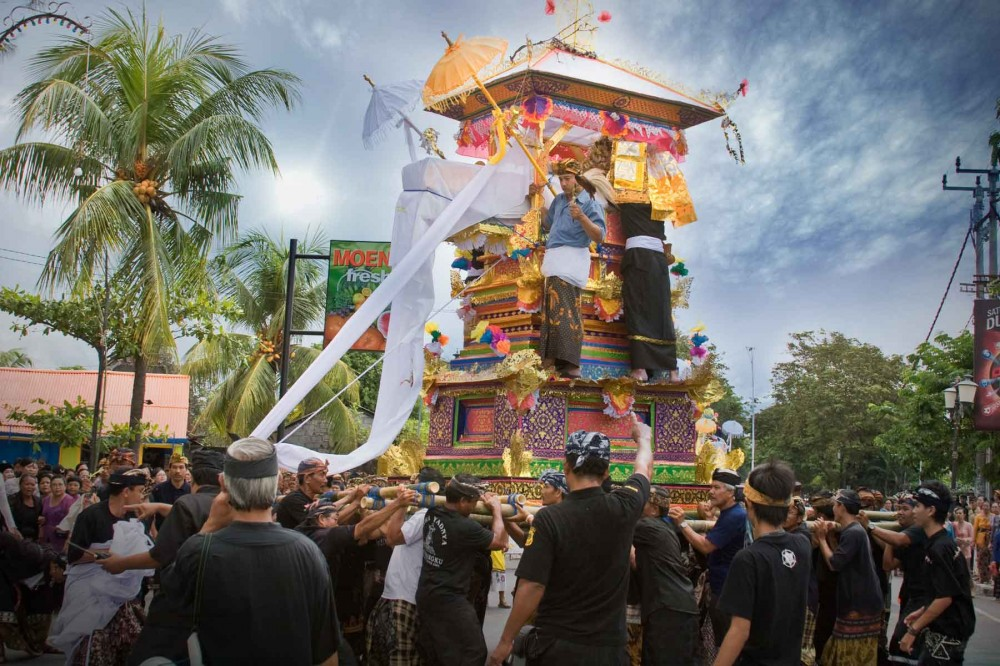Upacara ngaben -bali-
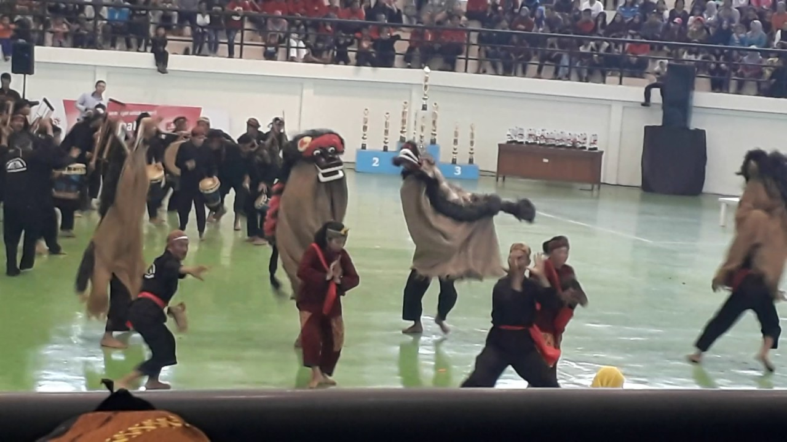Seni Reak -Jawa barat

Ondel-ondel -Betawi-

Tari piring -Minangkabau-
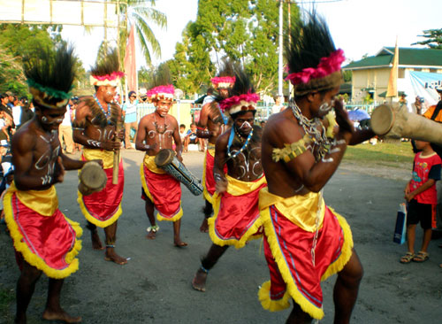Tari kabasaran -Manado-
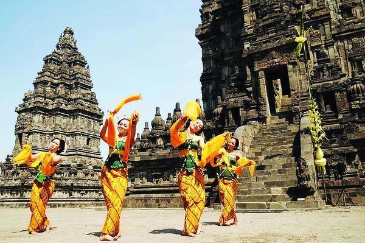Rancak denok -jawa tengah-
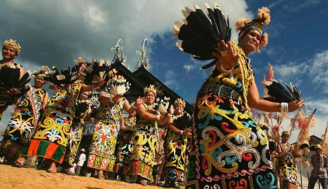Tarian suku dayak -Kalimantan-
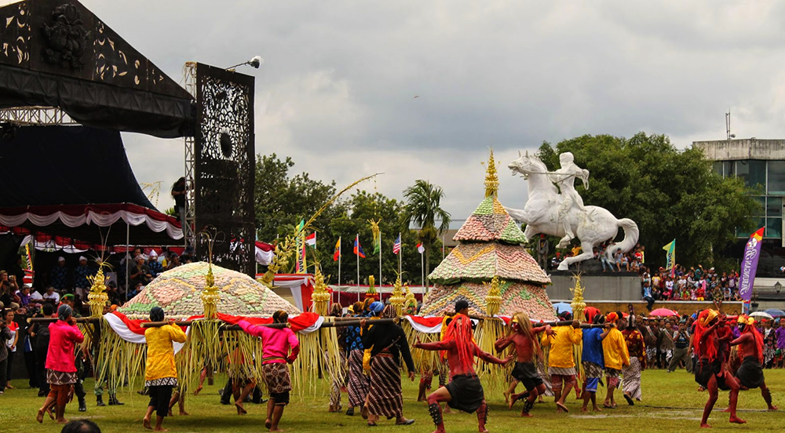Grebeg gethuk -Magelang-
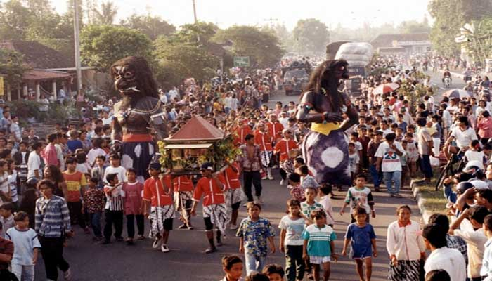Upacara saparan -Yogyakarta-